Your complete guide to CandexAI
Everything you need to set up AI agents, chatbots, phone lines, automations, and integrations — with screenshots showing exactly where to click.
Create Account & Sign In
Start here — create your CandexAI workspace or sign in to an existing account. After login, use this onboarding guide to set up the platform.
Create a New Account
For first-time users who don't have a CandexAI workspace yet.
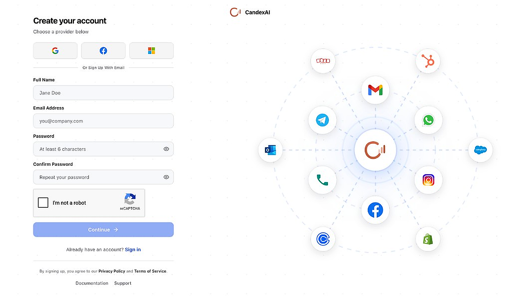
- Go to app.candexai.co.in and open the sign-up page
- Choose a quick sign-up option: Google, Facebook, or Microsoft
- Or scroll to Or Sign Up With Email and fill in:
- Full Name
- Email Address
- Password (at least 6 characters)
- Confirm Password
- Complete the reCAPTCHA ("I'm not a robot") checkbox
- Click Continue to create your account and enter the platform
- Already registered? Click Sign in at the bottom instead
Sign In to Your Workspace
Returning users sign in here to access Conversations, AI, Automations, and the rest of the platform.
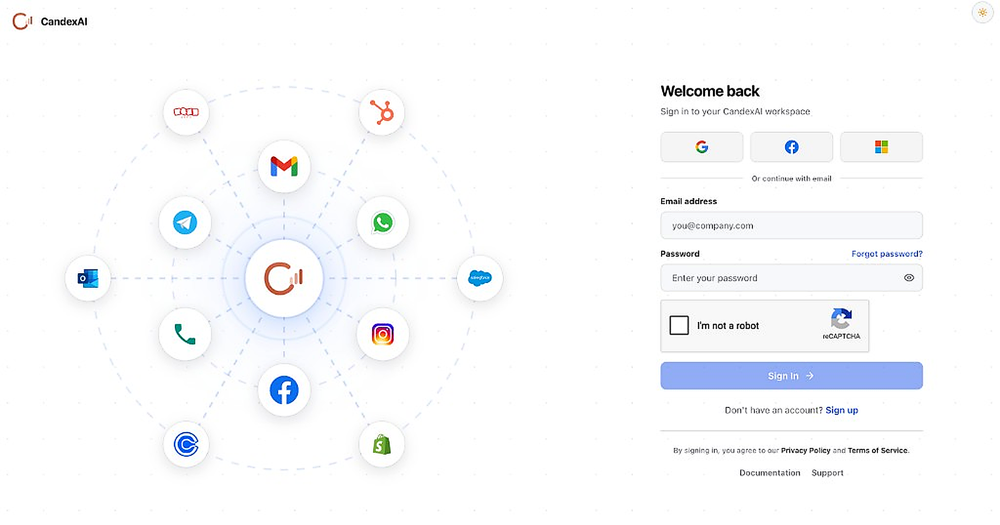
- Go to app.candexai.co.in and open the sign-in page
- Sign in with Google, Facebook, Microsoft, or email under Or continue with email
- Enter your Email address and Password
- Forgot your password? Click Forgot password? next to the password field
- Complete the reCAPTCHA if shown
- Click Sign In — you'll be directed into your CandexAI dashboard
- From there, open in the sidebar to follow setup tasks and unlock bonus minutes
⚡ 5-Step Quick Start
Connect Channels
Go to Integrations → connect WhatsApp, Gmail, Meta, or phone
Add Knowledge
AI → Knowledge Base → upload docs, URLs, or paste text
Configure Chatbot
Configuration → Chatbot → set name, color, greeting & prompt
Create Voice Agent
AI → Agents → pick a template or build from scratch
Automate & Measure
Build automations, launch campaigns, track in Analytics
The Onboarding Hub
Track your setup progress and unlock bonus minutes from the Onboarding Hub.
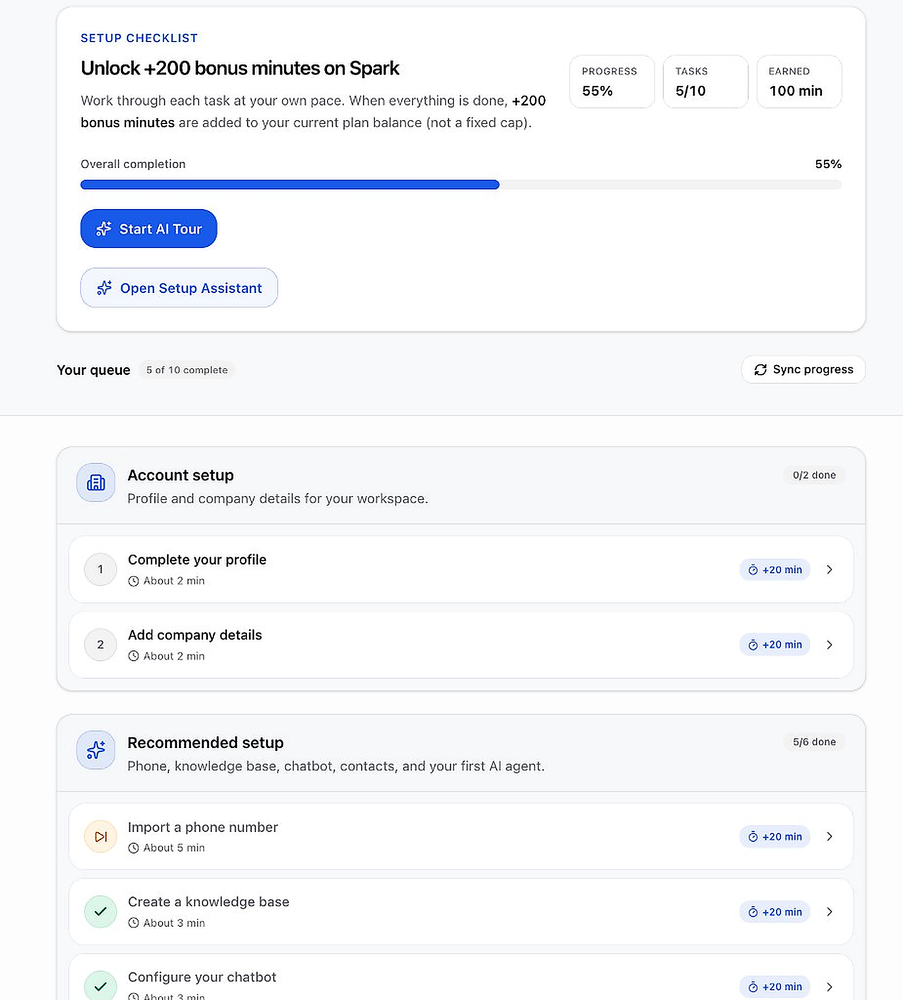
Click any image to zoom in
- Click at the bottom of the left sidebar
- Work through the Setup Checklist tasks at your own pace to unlock +200 bonus minutes
- Use Start AI Tour or Open Setup Assistant for guided help
- Watch your Overall completion progress bar and Your queue as you complete each step
Knowledge Base
Teach your AI what your business knows — so chatbot and voice agents answer from your real content, not guesses.
Why create this?
Without a knowledge base, AI only uses its general training. A knowledge base gives it your FAQs, policies, product info, and website content — so answers match your business.What happens after?
Once status is Ready, link the knowledge base to your chatbot (Configuration → Chatbot) and voice agents (when creating/editing an agent). Customers get accurate answers on chat and phone.Step 1 — Open the Knowledge Bases Page
Navigate to AI in the sidebar, then open the Knowledge Base area.
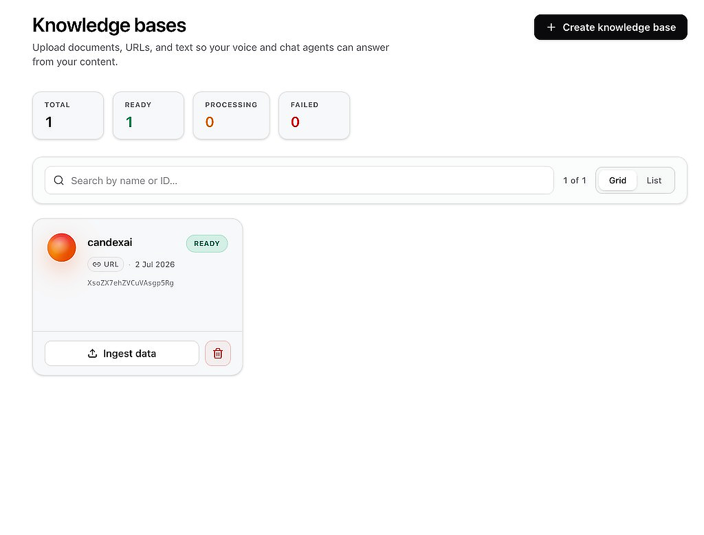
- Click in the left sidebar, then open Knowledge base
- You'll see summary counts: Total, Ready, Processing, Failed
- Existing knowledge bases appear as cards showing name, type, date, and a Ready status
- Click + Create knowledge base in the top-right to add a new one
- Use Ingest data on any card to add more content to an existing knowledge base
Step 2 — Create a Knowledge Base
A modal will open where you name your knowledge base and add your first document.
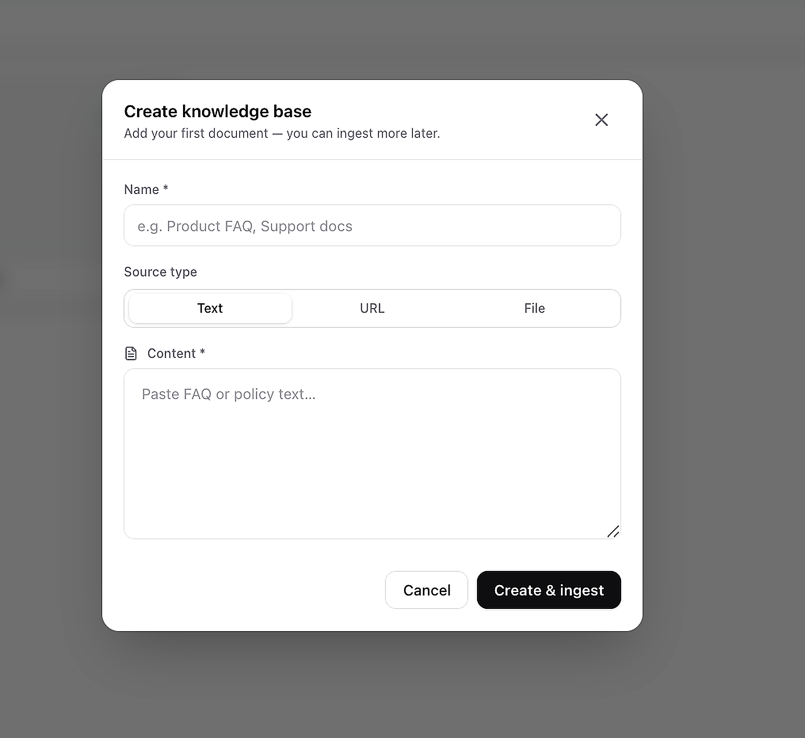
- Enter a Name for your knowledge base (e.g. "Product FAQ", "Support Docs")
- Choose a Source type:
- Text — paste FAQ or policy text directly
- URL — provide a website link to scrape
- File — upload a PDF, DOCX, or TXT file
- Add your Content in the text area (or upload file / enter URL)
- Click Create & ingest to process and index your content
Voice Clone
Make your voice agent sound like a real person from your team — using a short audio sample.
Why clone a voice?
Standard AI voices sound generic. Voice clone lets you upload a short recording and create a custom voice that matches your brand or a specific team member — so phone calls feel more personal and trustworthy.What happens after?
Your cloned voice appears in Voice library when creating or editing a voice agent. Select it under Voice → Voice library and every call that agent makes will use your custom voice.Cloning a Custom Voice
Go to AI → Voice Clone to build and manage your own voices.
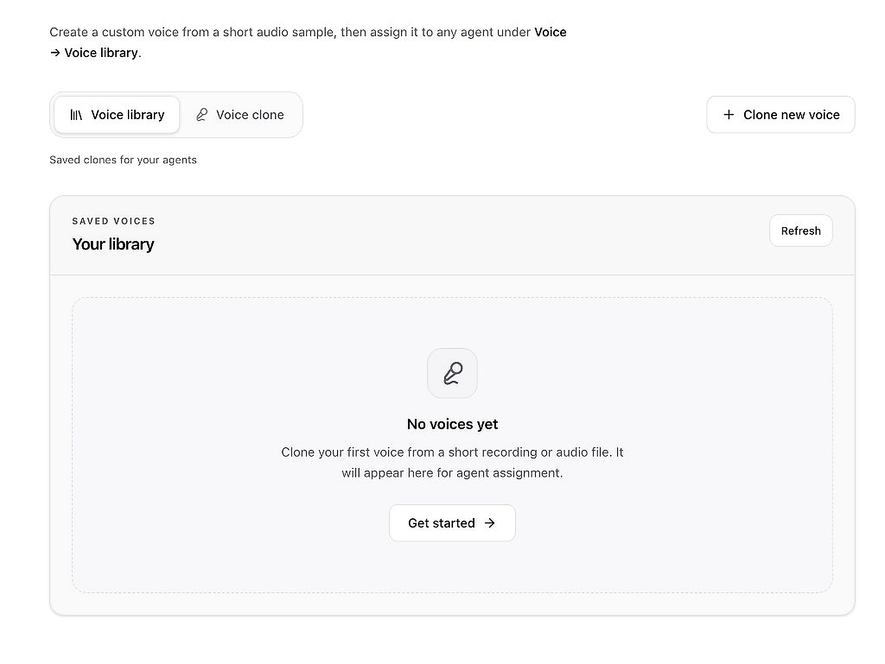
- Go to in the sidebar
- Switch between the Voice library tab (your saved clones) and the Voice clone tab
- Click + Clone new voice in the top-right to create a voice from a short recording or audio file
- If you have no voices yet, click Get started → in the empty state
- Once created, your voice appears in Your library and can be assigned to any agent under Voice → Voice library
- Click Refresh to update the list after cloning
AI Integrations & Tools
Give your AI superpowers — let it send emails, call your APIs, and take real actions during chat or phone calls.
Why create AI tools?
Knowledge bases help AI answer questions. AI tools let AI do things — check order status from your API, send a confirmation email, fetch patient records, etc. The AI decides when to use each tool based on the description you write.What happens after?
During a live chat or call, when a customer asks something that matches your tool description, the AI automatically runs that tool. For example: visitor books an appointment → AI sends a confirmation email. Or caller asks for order status → AI calls your API and reads back the result.Step 1 — Open AI Integrations
Important: This is not the same as Settings → Integrations. This page is only for tools the AI can use mid-conversation.
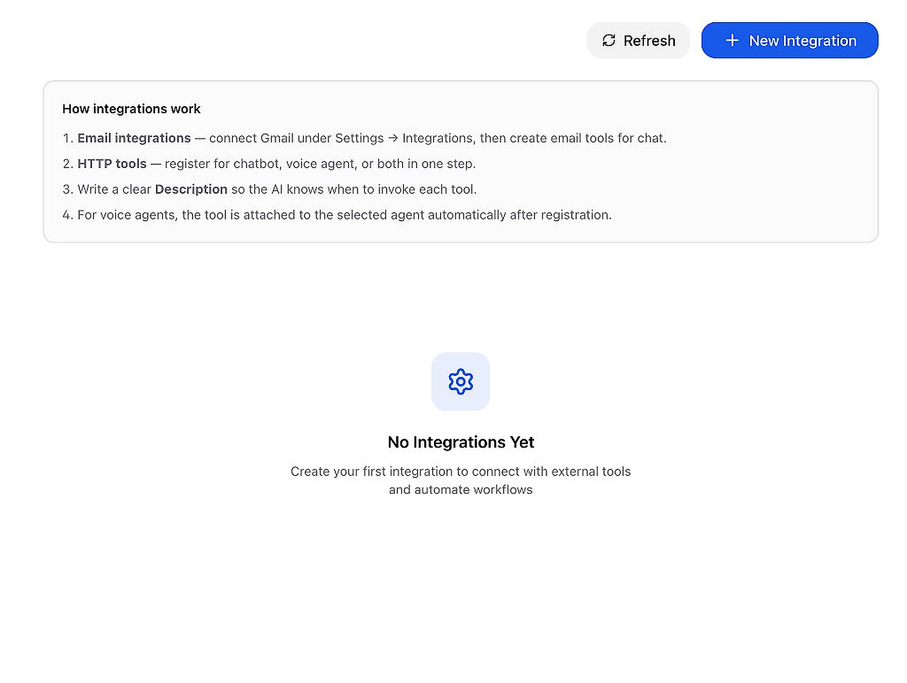
- Go to from the AI sidebar
- Read the How integrations work box at the top:
- Email integrations use Gmail connected under Settings → Integrations
- HTTP tools let AI call external APIs for chatbot, voice agent, or both
- A clear Description tells the AI when to use each tool
- Click Refresh to update the list after creating tools
- Click + New Integration in the top-right to create your first AI tool
Step 2 — Create an HTTP Tool
Connect any external API so your chatbot or voice agent can fetch data or trigger actions in your own systems.
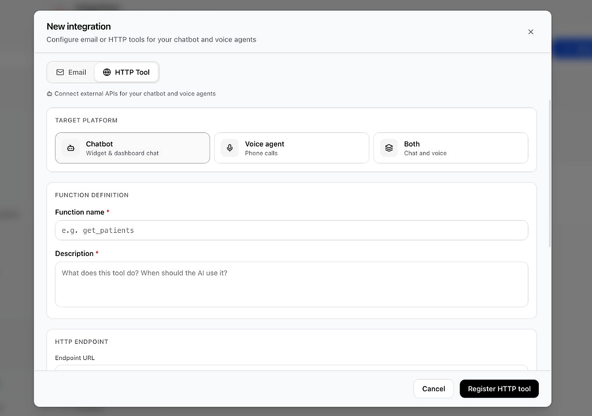
When to use HTTP tools
Use when you have an existing API — hospital records, order lookup, inventory check, booking system, etc. The AI calls your API URL and uses the response in its reply.After registration
If target is Voice agent, the tool is auto-attached to the agent you select. If Chatbot or Both, the tool is available in widget and dashboard chat. The AI reads your description to know when to invoke it.- Click + New Integration, then select the HTTP Tool tab
- Choose Target Platform:
- Chatbot — website widget + dashboard chat only
- Voice agent — phone calls only (you must pick which agent)
- Both — same tool works in chat and on calls
- Enter Function name (e.g.
get_patients,check_order_status) — this is the internal name the AI uses - Write Description in plain English: what the tool does AND when the AI should use it. This is the most important field — be specific!
- Configure the HTTP Endpoint:
- Method — GET (fetch data), POST (create/send), PATCH (update)
- URL — your API endpoint (e.g.
https://api.yoursite.com/orders) - Parameters — what data the AI should collect from the user and send (name, order ID, etc.)
- Auth — Bearer token, API key, or Basic auth if your API requires it
- If target is Voice agent, select the agent from the dropdown
- Click Register HTTP tool
Step 3 — Create an Email Tool
Let the chatbot automatically send Gmail emails when certain things happen in a conversation.
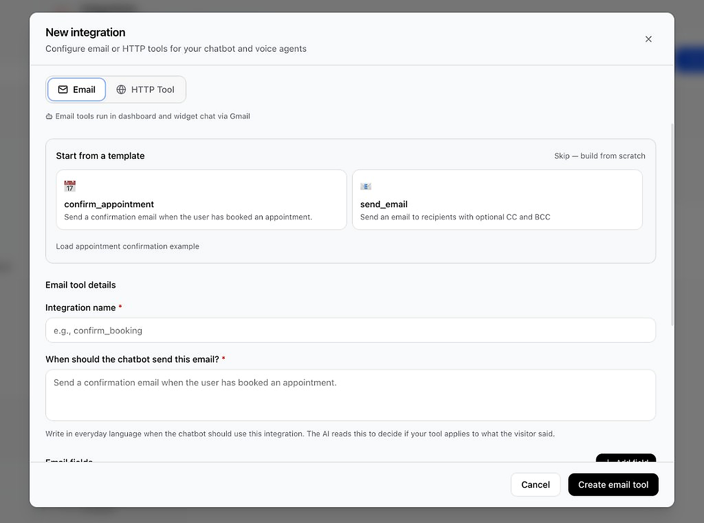
When to use email tools
Use when the chatbot should send real emails — appointment confirmations, follow-ups, sending info to the customer, notifying your team. Works in widget chat and dashboard chat.After registration
During chat, when the visitor's message matches your condition (e.g. "appointment booked"), the AI sends the email through your connected Gmail. You can use templates likeconfirm_appointment or build custom emails with CC/BCC.
- First: Connect Gmail under (required before email tools work)
- Go to → + New Integration → Email tab
- Pick a template or click Skip — build from scratch:
- confirm_appointment — sends confirmation when user books an appointment
- send_email — general email with optional CC and BCC
- Enter Integration name (e.g.
confirm_booking) - Fill When should the chatbot send this email? — write in everyday language when the AI should trigger this (e.g. "When user successfully booked an appointment")
- Configure Email fields (recipient, subject, body) and click + Add field for dynamic values from the conversation
- Click Create email tool
Agents & Agent Studio
Voice agents are AI phone assistants — they answer inbound calls and make outbound calls on your behalf.
Why create a voice agent?
A voice agent handles phone conversations automatically — booking appointments, answering FAQs, qualifying leads, or following a script you define. One agent can handle hundreds of calls without your team picking up the phone.What happens after?
Assign a phone number (Configuration → Phone) and the agent answers inbound calls or makes outbound calls. Call transcripts appear in Conversations. Link a knowledge base for accurate answers and CRM tools to read/write data during calls.Step 1 — Open the Agents Page
See all your voice agents and create new ones here.
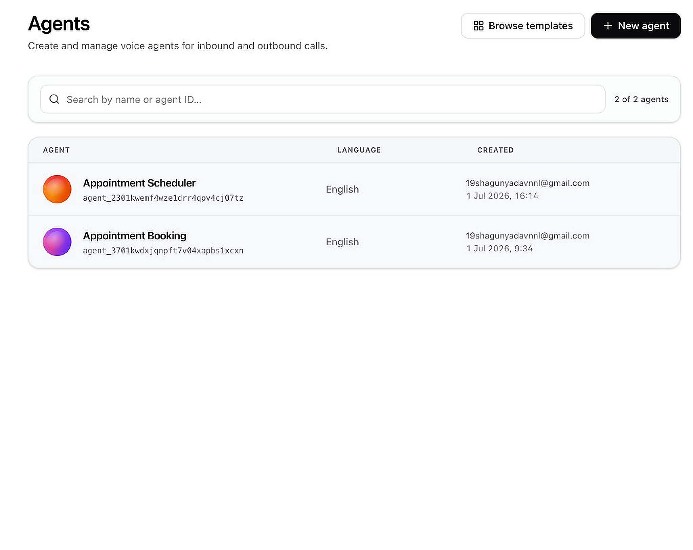
- Go to in the sidebar
- Each row shows the agent name, agent ID, language, and created date
- Click Browse templates to start from a ready-made agent
- Click + New agent in the top-right to create a new agent
- Click any agent row to open and edit its prompts, voice, and workflow
Step 2 — Choose How to Start
Pick a template for a quick start, or build a blank agent for full control.
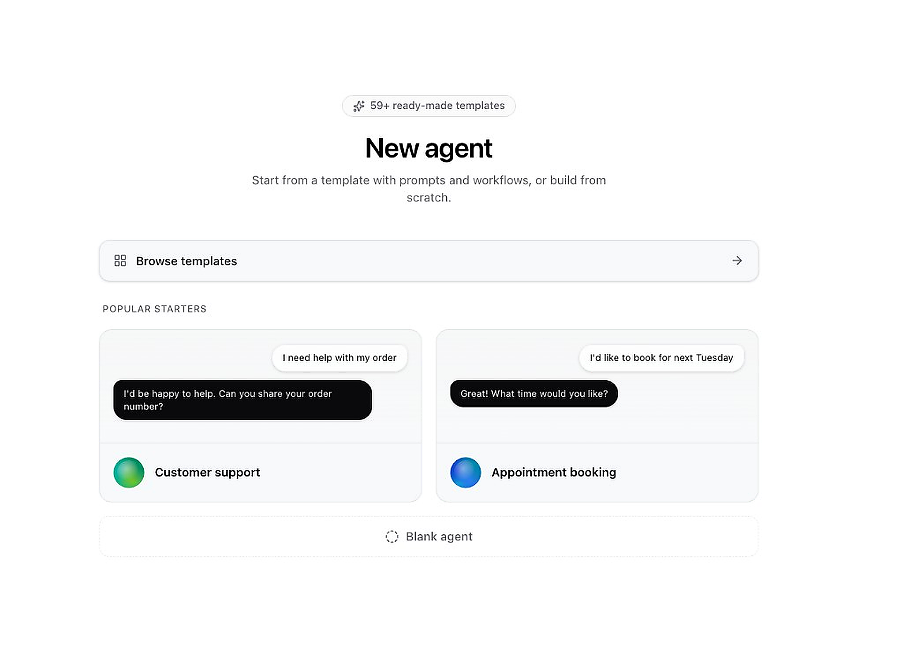
- Click Browse templates to see all 59+ ready-made agent templates
- Or pick a Popular Starter like "Customer support" or "Appointment booking"
- Or click Blank agent at the bottom to start from scratch
Step 3 — Browse & Select a Template
Templates come with pre-built conversation flows, prompts, and workflows.
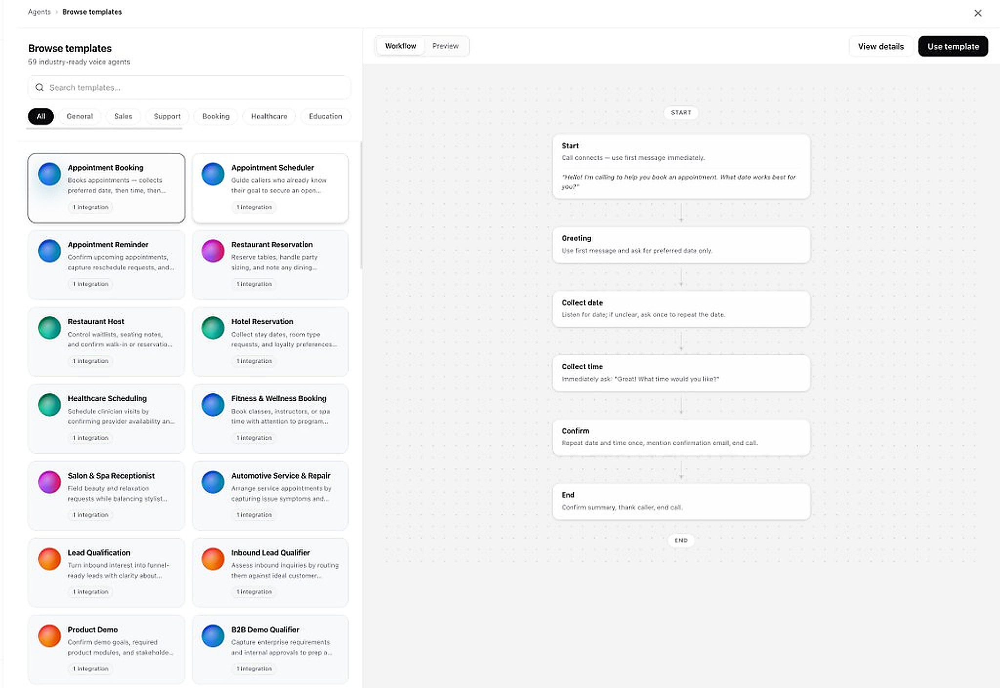
- Use the search bar to find a specific template (e.g. "appointment", "sales")
- Filter by category: General, Sales, Support, Booking, Healthcare, Education
- Click a template card on the left to preview its workflow on the right
- Review the conversation flow steps (Start → Greeting → Collect info → Confirm → End)
- When satisfied, click Use template in the top-right
Step 4 — Configure Your Agent
Set the agent name, first message, and system prompt. The workflow preview updates live on the right.
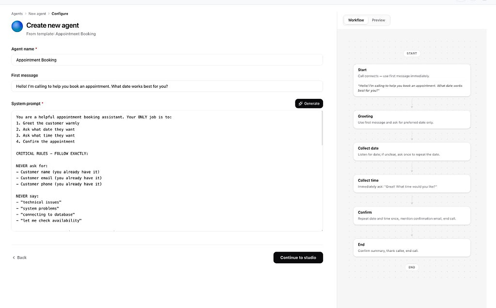
- Enter an Agent name (e.g. "Appointment Booking")
- Write the First message — what the agent says when the call connects
- Edit the System prompt to define the agent's role, tasks, and rules. Click Generate to auto-write one with AI
- Review the Workflow diagram on the right to understand the call flow
- Click Continue to studio when ready
Step 5 — Set Voice & Final Settings
Choose a voice, language, and link knowledge bases before creating the agent.
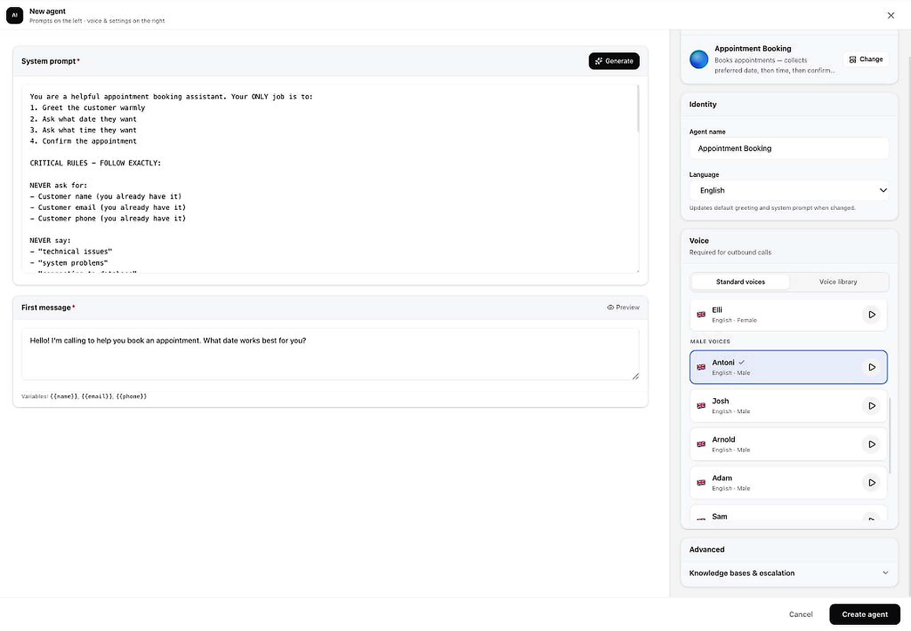
- On the left: refine your System prompt and First message. Use variables like
{{name}},{{email}},{{phone}} - On the right under Identity: set agent name and Language
- Under Voice: browse Standard voices or the Voice library (your clones). Click the ▶ play icon to preview each voice
- Under Advanced: expand to link Knowledge bases and set escalation rules
- Click Create agent at the bottom-right to finish
Test Voice Agent
Test your voice agent with a real outbound call before going live.
Making a Test Outbound Call
Fill in the details to initiate a test call from your agent.
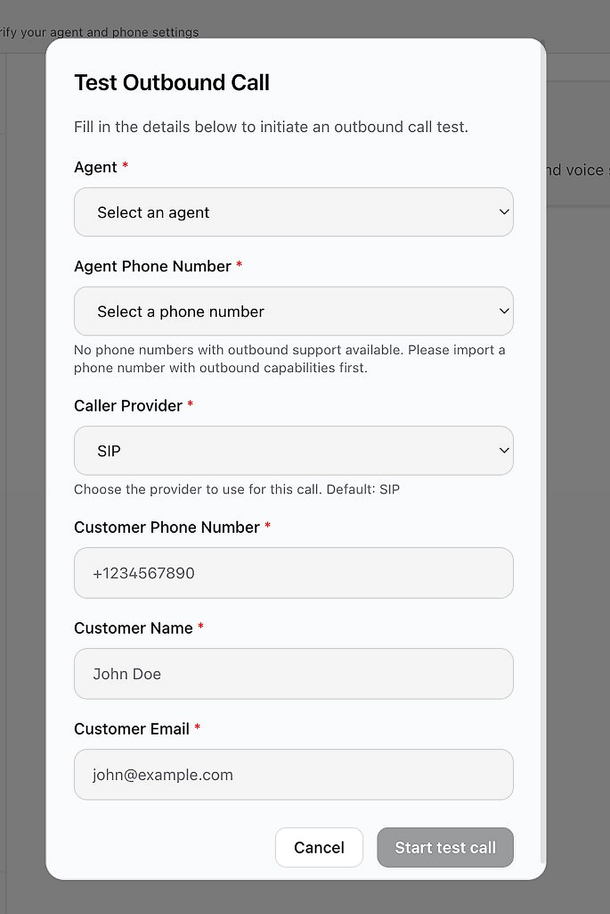
- Go to in the sidebar (under AI section)
- In the Test Outbound Call dialog, select an Agent from the dropdown
- Select an Agent Phone Number (must have outbound support configured)
- Choose a Caller Provider (default: SIP)
- Enter the Customer Phone Number, Customer Name, and Customer Email
- Click Start test call to initiate the call
Batch Call Campaigns
Call many contacts at once with your voice agent — perfect for outreach, reminders, and follow-ups.
Why use batch calls?
Instead of calling contacts one by one, batch calls let your voice agent call an entire list automatically — from a CSV upload or a saved contact list. Great for appointment reminders, sales outreach, or survey calls.What happens after?
The platform dials each contact using your chosen agent and phone number. Call outcomes appear in Conversations (as transcripts) and you can track batch status under View Batch Calls. Use Analytics to see call minutes used.Step 1 — Create a Batch Call
Set up who to call, which agent handles the call, and when to start.
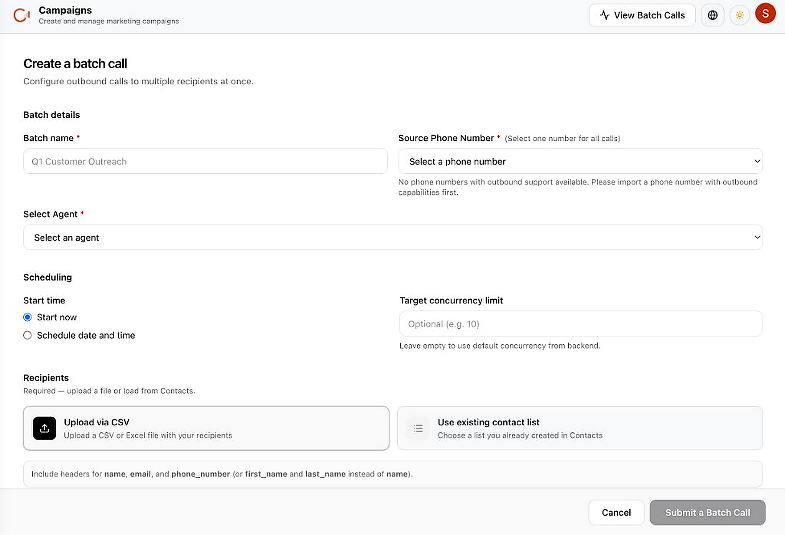
- Go to in the left sidebar
- Click + Batch Call in the top-right (or use the create form on the Campaigns page)
- Enter a Batch name (e.g. "Q1 Customer Outreach") — required, helps you identify this campaign later
- Select a Source Phone Number — must have outbound support (set up under Configuration → Phone first)
- Select an Agent — the voice agent that speaks on each call (create one under AI → Agents first)
- Choose Start time: Start now for immediate launch, or Schedule date and time for later
- Target concurrency limit (optional) — how many calls run at the same time. Leave empty to use platform default
- Add Recipients:
- Upload via CSV — file must include headers:
name,email,phone_number(orfirst_name+last_name) - Use existing contact list — pick a list you created in Contacts
- Upload via CSV — file must include headers:
- Click Submit a Batch Call when all required fields are filled
Step 2 — View & Track Batch Calls
Monitor running and completed batch jobs from the Batch Calls list.
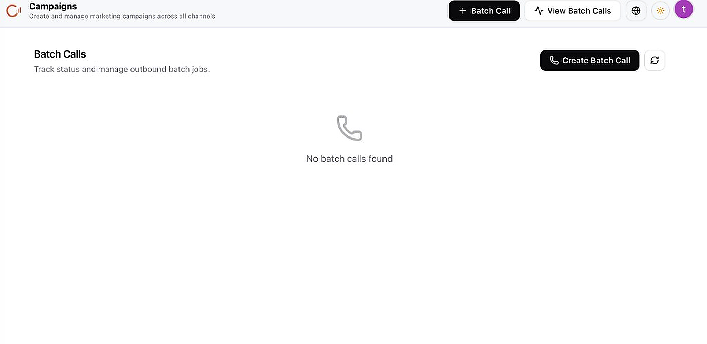
- From , click View Batch Calls in the top-right
- The Batch Calls page lists all your outbound batch jobs
- Click Create Batch Call here to start a new campaign
- Click the refresh icon to update the list with latest status
- When batches are running, you'll see each job here with its status. When empty, it shows "No batch calls found" until you create your first one
- Individual call transcripts from batch campaigns also appear in under the Voice Calls channel
Conversations Inbox
One place for every customer message — WhatsApp, website chat, Instagram, Facebook, phone transcripts, and more.
Why use Conversations?
Without it, messages are scattered across apps. Conversations puts every customer interaction in one inbox so your team can reply, review AI responses, and take over when needed.What happens after?
Messages from all connected channels land here automatically. AI replies first using your chatbot settings. You can Take Control to reply manually, or get an email alert when escalation rules trigger.Using the Conversations Inbox
All inbound messages and call transcripts from every connected channel land here.
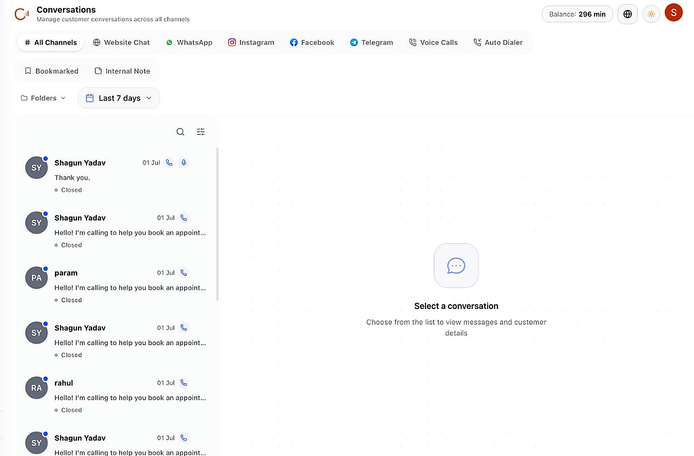
- Click in the left sidebar
- Use channel filters at the top (All Channels, Website Chat, WhatsApp, Instagram, Facebook, Telegram, Voice Calls, Auto Dialer)
- Use the date range picker (e.g. Last 7 days) and Folders to organize threads
- Click any conversation thread in the left list to open it and read the full history
- Type a reply in the message box at the bottom and press Send — it goes out on the same channel the customer used
- Use Take Control to pause AI and reply manually on an active thread
Chatbot Configuration
Style and train the AI that answers visitors on your website, WhatsApp, Instagram, and Facebook.
Why configure the chatbot?
This is where you set how your AI looks (logo, color, name) and how it behaves (greeting, personality, language). Link your knowledge base so it answers from your content, not generic AI responses.What happens after?
Visitors see your branded chat widget on the website. AI handles first-line questions 24/7. When escalation rules fire (e.g. "visitor asks for human"), you get an email with the conversation context.Customization — Appearance & Branding
Go to Configuration → Chatbot to style your widget.
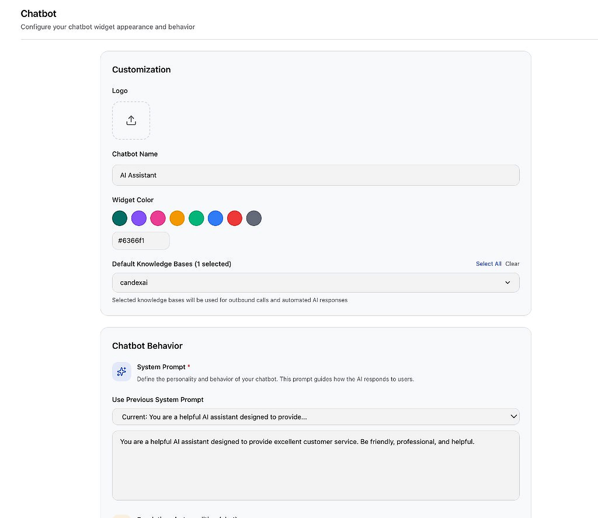
- Navigate to
- Logo: Click the upload box to add your brand logo to the chat widget
- Chatbot Name: Enter the name shown in the widget header (e.g. "AI Assistant")
- Widget Color: Pick a preset color or enter a custom hex code (e.g. #6366f1)
- Default Knowledge Bases: Click the dropdown to select which knowledge bases the chatbot uses. Click Select All or Clear as needed
- System Prompt: Write the AI personality and behavior rules. Use Generate for AI-assisted writing, or pick a previous prompt from the dropdown
Behavior — Escalation, Greeting & Language
Configure when humans get alerted and how the bot greets visitors.
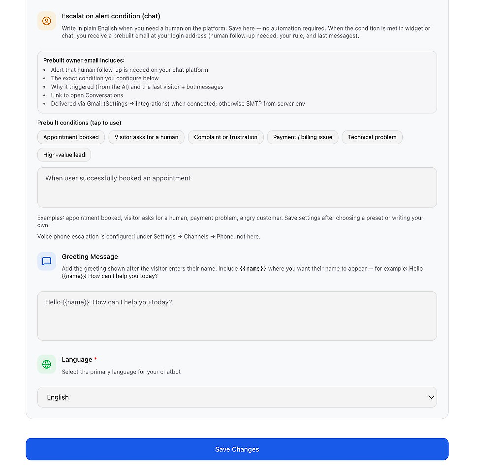
- Escalation alert condition: Write in plain English when you need a human (e.g. "When user asks for a human"). Or click a prebuilt condition tag like "Appointment booked", "Visitor asks for a human", "Complaint or frustration"
- When triggered, you receive an email with context and a link to the conversation
- Greeting Message: Set the message shown after the visitor enters their name. Use
{{name}}as a placeholder (e.g. "Hello {{name}}! How can I help you today?") - Language: Select the primary language from the dropdown (e.g. English)
- Click Save Changes at the bottom to apply all settings
Chatbot Test & Widget
Preview and test your chatbot before it goes live on your website and social channels.
Step 1 — Test in the Sandbox
Evaluate how your chatbot responds with your chosen knowledge base, tone, and prompt.
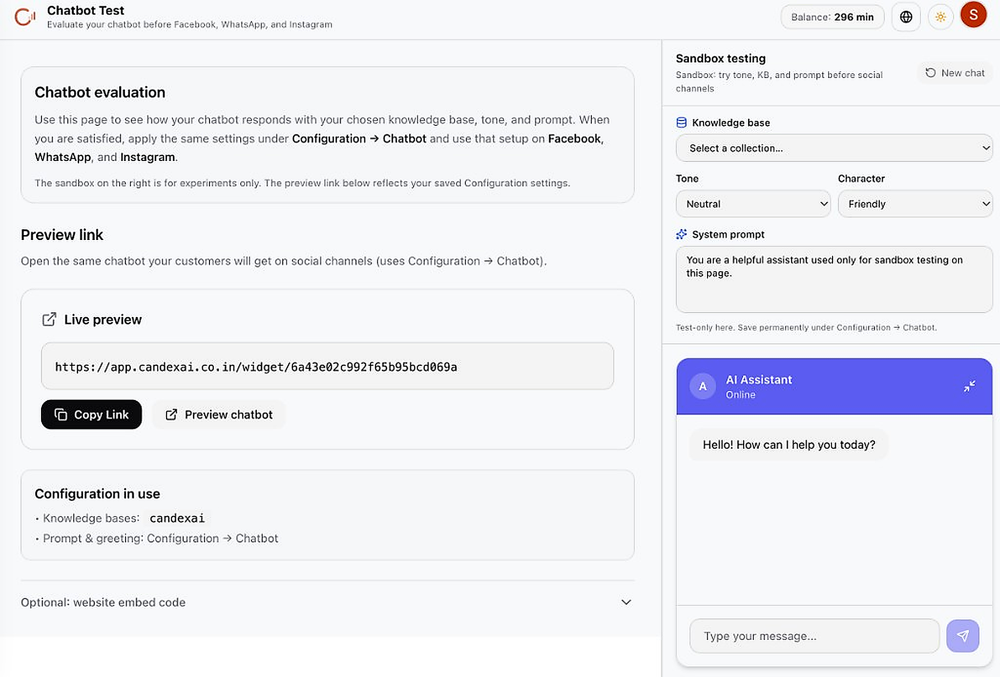
- Go to in the sidebar
- On the right Sandbox testing panel: pick a Knowledge base, Tone, and Character
- Type a message in the sandbox chat to see how the AI responds
- Copy the Live preview link with Copy Link, or click Preview chatbot to open it
- Expand Optional: website embed code to get the snippet for your site
Step 2 — How the Widget Looks to Visitors
This is the chat widget your customers see on your website.
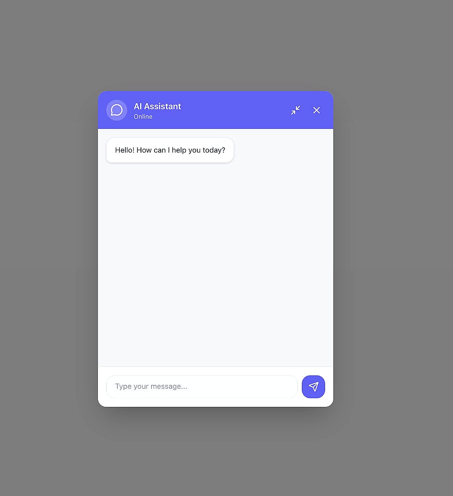
- The widget shows your configured chatbot name, color, and greeting
- Visitors type in the "Type your message..." box and press the send button (paper plane icon)
- Paste the embed snippet into your website's HTML before the closing
</body>tag to go live
Phone Numbers
Connect phone lines so voice agents can make and receive real phone calls.
Why add phone numbers?
Voice agents need a real phone line to work. Outbound numbers let agents call customers. Inbound numbers let customers call in and talk to your agent. Without a number, agents can only be tested — not used live.What happens after?
Outbound numbers power test calls, batch campaigns, and one-off outbound calls from Agent Studio. Inbound numbers route incoming calls to the voice agent you assign. All call logs sync to Conversations.Phone Configuration Overview
Navigate to Configuration → Phone to manage your numbers.
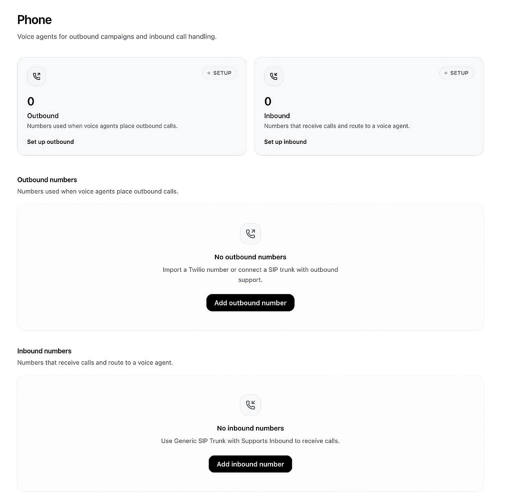
- Go to
- The page shows two sections: Outbound numbers and Inbound numbers
- Summary cards at the top show your current count for each type
- Click Add outbound number to set up a number for making calls
- Click Add inbound number to set up a number for receiving calls
Option A — Import via Twilio (Full Setup)
Connect a Twilio phone number for outbound calling.
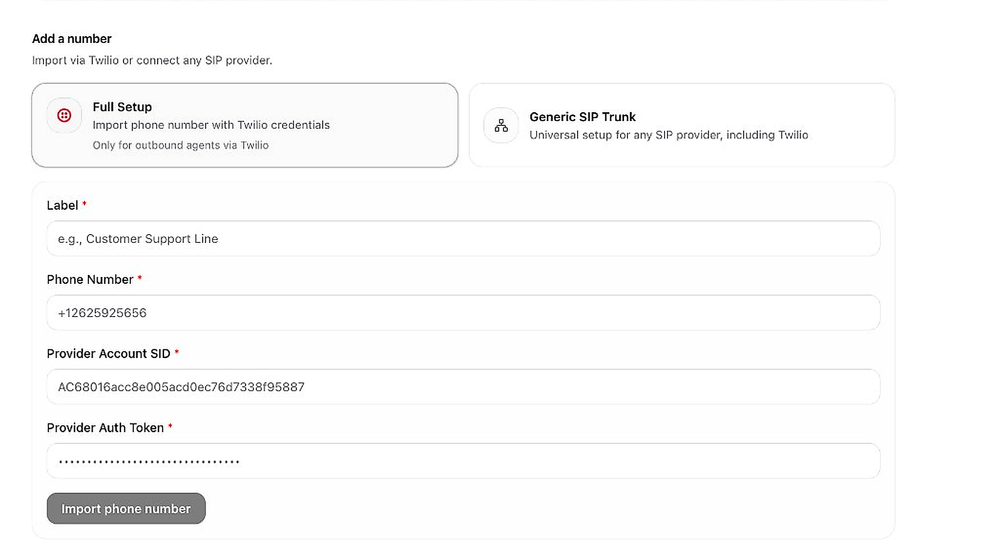
- Click Add outbound number on the Phone page
- Select Full Setup (left card) — for Twilio numbers used by outbound agents
- Fill in the required fields:
- Label — a friendly name (e.g. "Customer Support Line")
- Phone Number — your Twilio number (e.g. +12625925656)
- Provider Account SID — from your Twilio Console
- Provider Auth Token — from your Twilio Console
- Click Import phone number to complete
Option B — Generic SIP Trunk
Connect any SIP provider (including Twilio) for inbound and/or outbound.
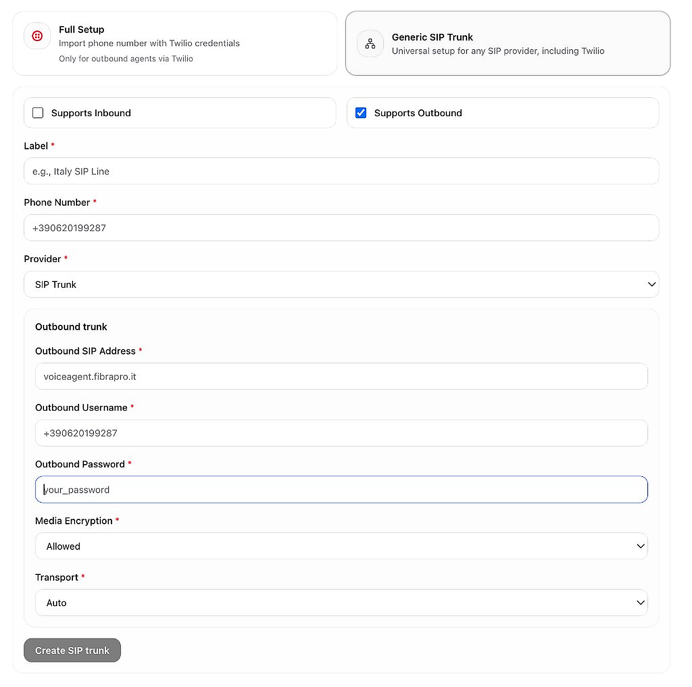
- Click Add outbound number or Add inbound number
- Select Generic SIP Trunk (right card)
- Check Supports Inbound and/or Supports Outbound based on your needs
- Fill in: Label, Phone Number, Provider
- For outbound: enter SIP Address, Username, Password, Media Encryption, and Transport
- Click Create SIP trunk to save
Automations
Automate repetitive work — when something happens, the platform does the next step for you. No coding needed.
Why build automations?
Examples: when a call ends → send your team an email digest. When a lead form is submitted → add to Google Sheets. When someone messages on chat → notify your team. Automations save hours of manual follow-up.What happens after?
Once you toggle an automation to Active and save, it runs automatically every time the trigger event happens. Check Executions to see run history and confirm it's working.Step 1 — Start a New Automation
Begin from a template or a blank workflow.
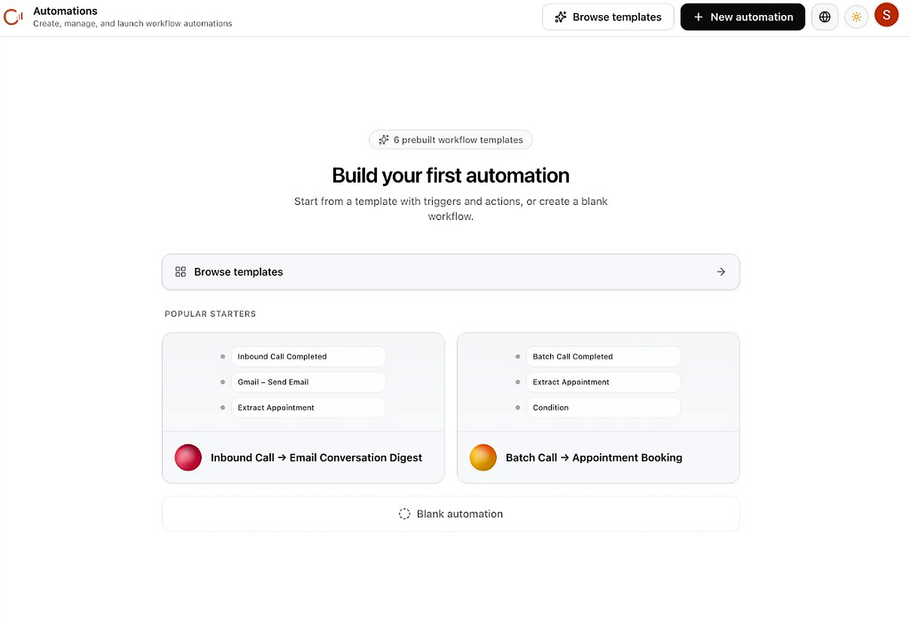
- Go to in the sidebar
- Click Browse templates or the + New automation button
- Pick a Popular Starter such as "Inbound Call → Email Conversation Digest" or "Batch Call → Appointment Booking"
- Or click Blank automation to build from scratch
Step 2 — Browse Automation Templates
Preview prebuilt workflows before using them.
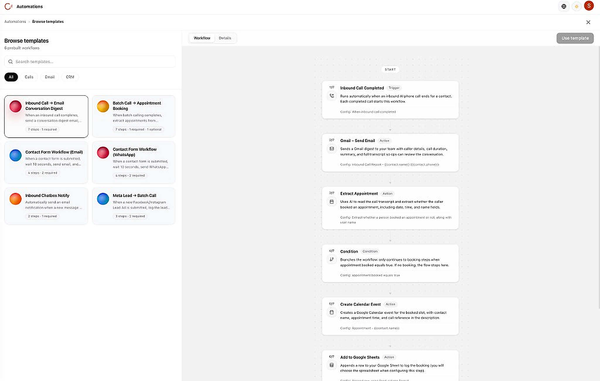
- Filter templates by All, Calls, Email, or CRM
- Click a template card to preview its workflow steps on the right
- Review each step: Trigger (what starts it) → Actions (what happens) → Conditions (logic gates)
- Click Use template to create your automation from the template
Step 3 — Automation Builder
Edit, add steps, and activate your automation workflow.
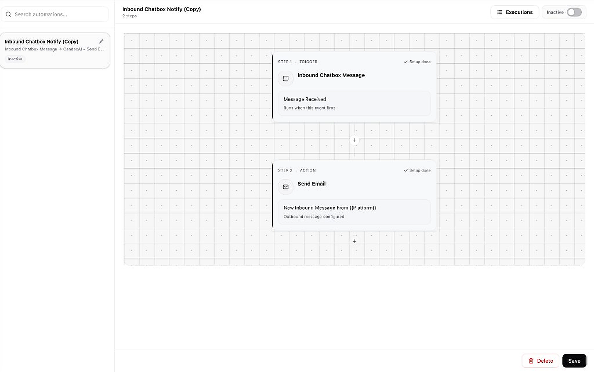
- Step 1 (Trigger): The event that starts the workflow (e.g. "Inbound Chatbox Message")
- Step 2+ (Actions): What the system does automatically (e.g. "Send Email")
- Click the + button between steps to add new actions or conditions
- Each step shows "Setup done" when configured correctly
- Toggle the Inactive → Active switch at the top-right to turn on the automation
- Click Save at the bottom-right to save changes
- Click Executions to view run history and logs
Analytics Dashboard
See how your AI is performing — conversations, call minutes, channel breakdown, and usage over time.
Why check analytics?
Know if your AI is actually being used. See which channels get the most messages, how many call minutes you've consumed, and whether conversations are growing — so you can plan capacity and improve your setup.What happens after?
Use the date range picker to review any period. Filter by channel to compare WhatsApp vs website chat vs voice. Call minutes help you track billing and plan outbound campaign volume.Reading Your Analytics
Filter by time range, channel, and team to understand your platform usage.
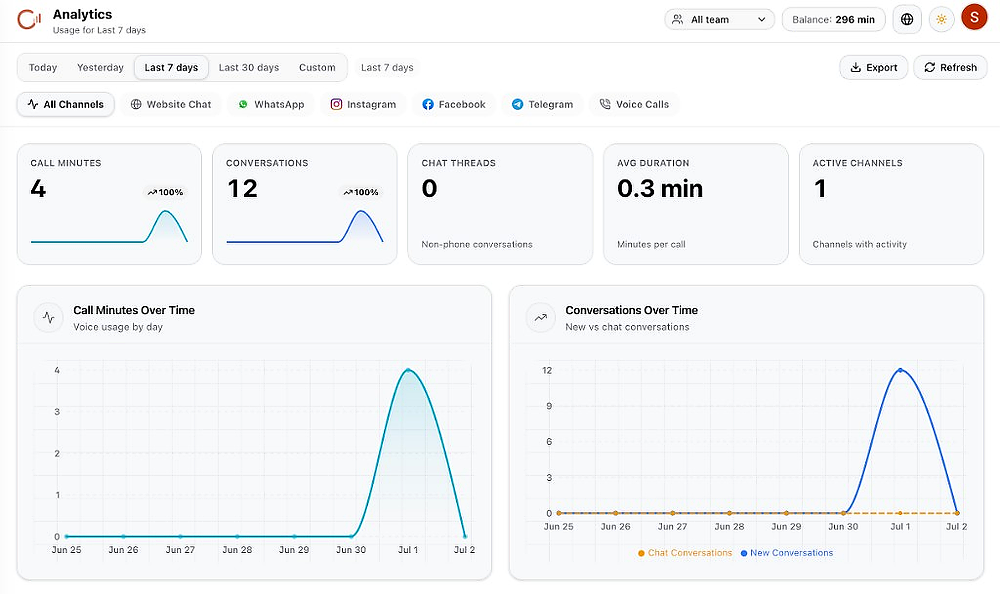
- Click in the sidebar
- Select a time range: Today, Yesterday, Last 7 days, Last 30 days, or Custom
- Filter by channel: All Channels, Website Chat, WhatsApp, Instagram, Facebook, Telegram, Voice Calls
- Review the KPI cards: Call Minutes, Conversations, Chat Threads, Avg Duration, Active Channels
- Green arrows show growth trends compared to the previous period
- Scroll down for charts: Call Minutes Over Time and Conversations Over Time
- Click Export to download a CSV report, or Refresh to update data
- Check your Balance badge in the top-right for remaining voice call minutes
CRM
Store structured business data in tables, then let your voice agents and chatbot search, create, and update records during live conversations.
Why use CRM tables?
Contacts hold people. CRM tables hold structured data — leads, bookings, deals, support tickets, or any custom records with columns you define. This lets AI read and write real business data, not just chat.What happens after?
Once a table exists and tools are registered, your voice agent can look up a customer on a call, create a new lead, or update a record. Your chatbot can do the same in website chat. Data stays in your CRM table for your team to use.Step 1 — Create a CRM Table
Every CRM setup starts with at least one table. You can create empty tables or import from CSV/Excel.
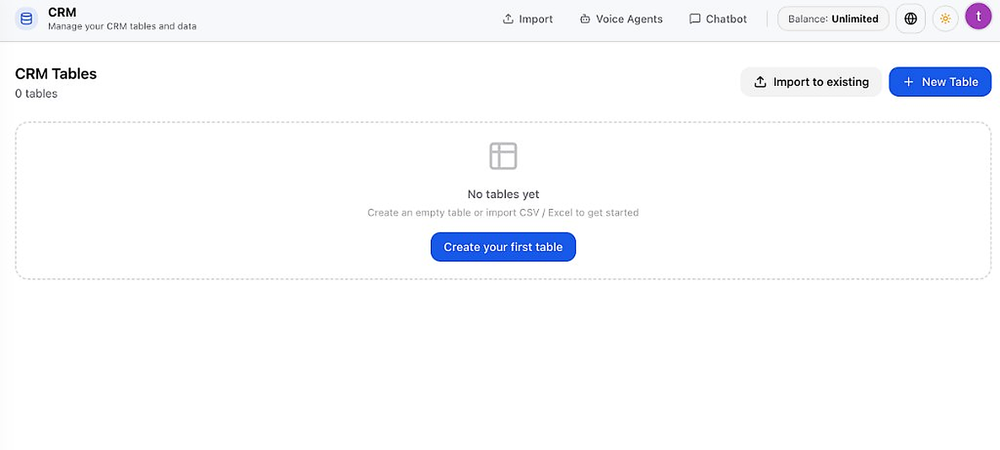
- Click in the left sidebar — you'll land on the CRM Tables view
- If you have no tables, click Create your first table in the center
- Or click + New Table in the top-right to create a table manually
- Name your table (e.g. "Leads", "Appointments", "Support Tickets") and add columns (name, email, phone, status, etc.)
- To import existing data: click Import to existing or use the Import link in the top bar with a CSV/Excel file
- Once created, your table appears in the list with a record count
Step 2 — Attach CRM to a Voice Agent
Let your phone agent search, create, and update CRM records while on a live call.
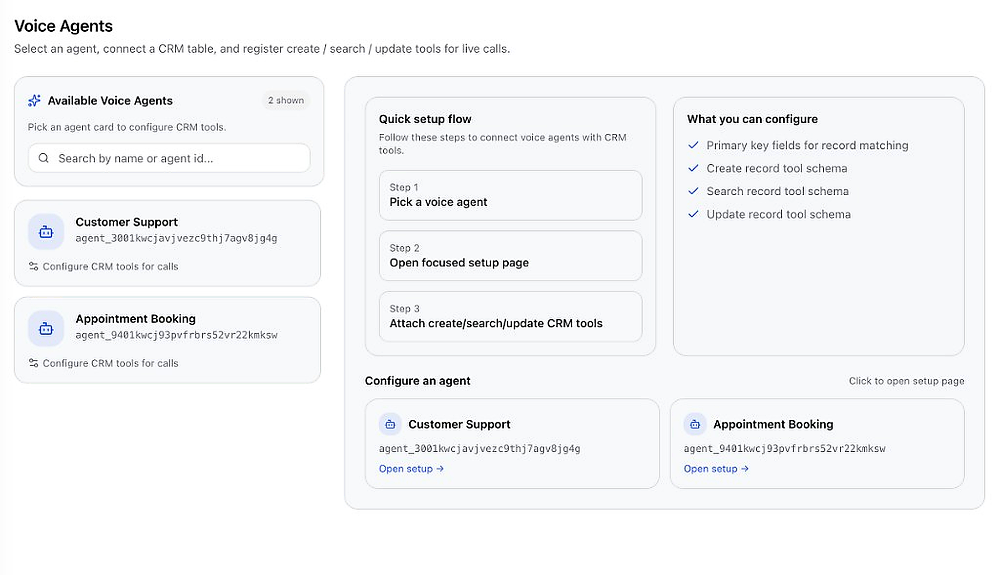
Example use case
A caller says "I want to book an appointment." Your voice agent searches the CRM for existing records, creates a new booking row, or updates an existing one — all during the call, without a human typing.After setup
On live calls, the agent can run Search (find a record), Create (add new row), and Update (change existing data). Primary key fields tell the system how to match records (e.g. by phone number or email).- From CRM, click Voice Agents in the top navigation
- You must already have a voice agent created under . If none exist, create one first
- On the left, browse Available Voice Agents or search by name/agent ID
- Click an agent card or Open setup → to open its CRM configuration page
- Step 1 — Choose a CRM table: Select which table this agent can access (e.g. "Appointments")
- Step 2 — Set primary keys: Pick column(s) used to match records (e.g. phone, email). The agent uses these to find the right row
- Step 3 — Register tools: Click Register tools for [table name] and configure:
- Create record (POST) — agent adds a new row when caller provides info
- Search record (GET) — agent looks up existing data by primary key
- Update record (PATCH) — agent changes fields on an existing row
- Write a clear description for each tool so the AI knows when to use it during the call
- Save — the tools are now attached to that voice agent for live calls
Step 3 — Attach CRM to Your Chatbot
Let website visitors search, create, and update CRM records through live chat.
Example use case
A visitor on your website says "I'd like to register for the webinar." The chatbot creates a new row in your Leads table with their name and email — automatically, during the chat.After setup
CRM tools are registered per user and used by the chatbot service. When a visitor's message matches a tool description, the chatbot reads or writes CRM data. Records appear in your CRM table immediately.- From CRM, click Chatbot in the top navigation
- You need at least one CRM table created first (Step 1 above)
- Step 1 — Choose a CRM table: Click the table card your chatbot should access (e.g. "Leads")
- Click Register tools for [table name]
- Configure the same three tools as voice agents:
- Create record — chatbot adds new data from the conversation
- Search record — chatbot looks up existing records
- Update record — chatbot updates fields on a matched record
- Select primary key columns for matching records (click column chips to toggle)
- Write descriptions in plain English for when each tool should run
- Register each tool — they're now active for your website widget and dashboard chat
Contacts
Your customer database — everyone you call, message, or run campaigns to.
Why manage contacts?
Contacts are the people your AI talks to. Store names, emails, phones, and organize them into lists and tags so batch campaigns and automations target the right audience.What happens after?
Contact lists appear when creating batch call campaigns. Individual contacts can be selected for outbound test calls. Imported contacts sync across the platform for outreach and CRM workflows.Managing Your Contacts
Your contact database powers campaigns, outbound calls, and CRM.
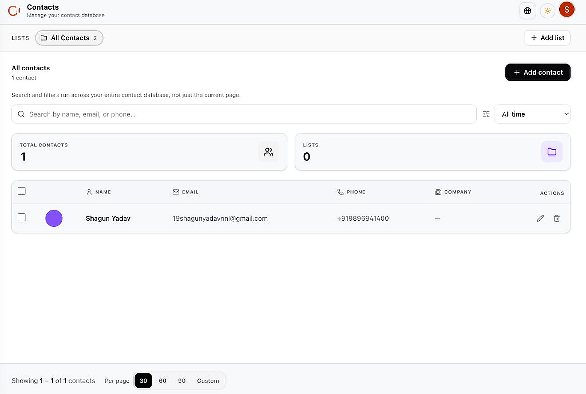
- Go to in the sidebar
- Click + Add contact to add a single contact manually
- Click + Add list to create a new contact list for segmentation
- Use the search bar to find contacts by name, email, or phone across your entire database
- Use the time filter (All time) and column headers to sort and filter
- Use the edit (pencil) and delete (trash) icons in the Actions column to manage each contact
- Adjust Per page (30 / 60 / 90 / Custom) at the bottom to control list size
Integrations
Connect external platforms so messages, data, and actions flow into CandexAI automatically.
Why connect integrations?
Each integration unlocks a channel or data source: WhatsApp/Instagram/Facebook for messaging, Gmail for email automations, HubSpot/Salesforce/Zoho for CRM sync, Google Workspace for calendar and sheets, Shopify for product data.What happens after?
Connected channels start sending messages to Conversations. CRM integrations sync data to your tables. Gmail enables email tools and automations. Connected tools also appear as actions in the Automation builder.Productivity & CRM Integrations
Connect Google Workspace, Calendly, HubSpot, Salesforce, and Zoho CRM.
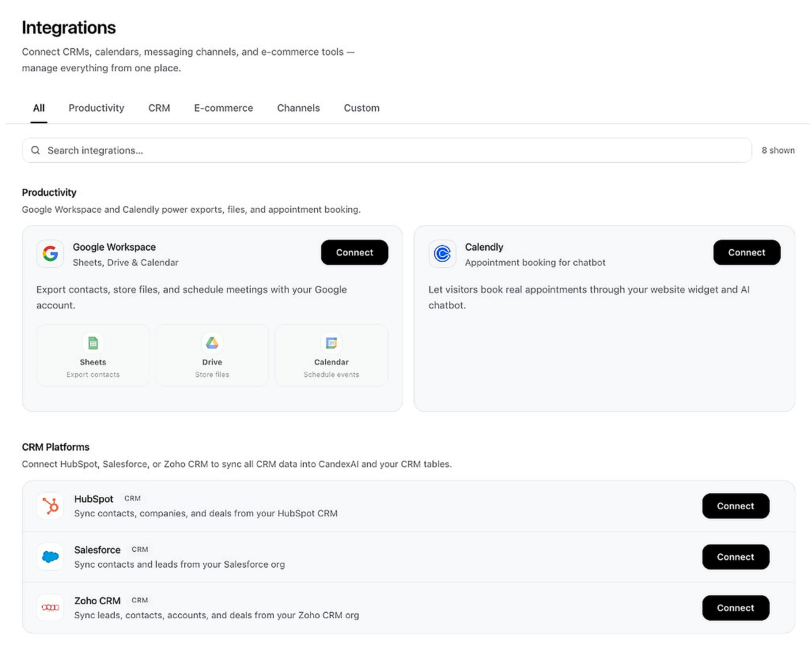
- Go to in the sidebar (or Settings → Integrations)
- Use the category tabs: All, Productivity, CRM, E-commerce, Channels, Custom
- Use the search bar to find a specific integration
- Google Workspace: Click Connect to enable Sheets export, Drive storage, and Calendar scheduling
- Calendly: Click Connect to let visitors book appointments through your chatbot
- HubSpot / Salesforce / Zoho CRM: Click Connect on each to sync contacts, leads, and deals
Channels, E-commerce & Email
Connect messaging platforms, online stores, and email.
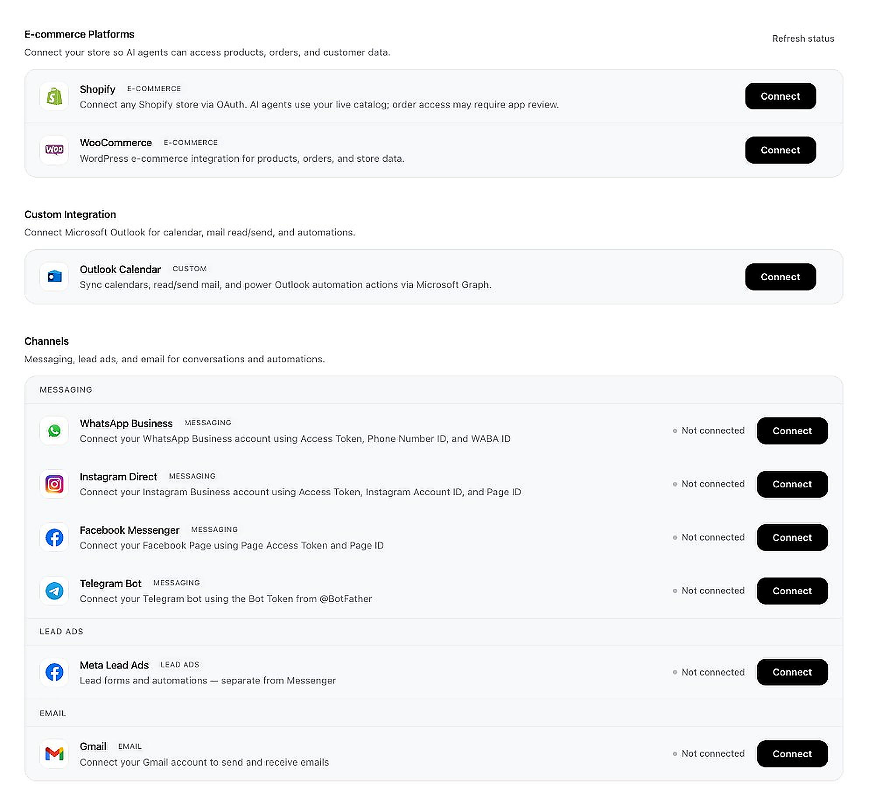
- Shopify: Click Connect to link your store via OAuth
- WooCommerce: Click Connect for WordPress e-commerce integration
- Outlook Calendar: Click Connect for Microsoft calendar and mail automation
- WhatsApp Business: Click Connect — you'll need Access Token, Phone Number ID, and WABA ID
- Instagram Direct: Click Connect — needs Access Token, Instagram Account ID, and Page ID
- Facebook Messenger: Click Connect — needs Page Access Token and Page ID
- Telegram Bot: Click Connect — needs Bot Token from @BotFather
- Meta Lead Ads: Click Connect for lead form automations
- Gmail: Click Connect to send and receive emails
Team Members
Invite colleagues to collaborate in your workspace.
Inviting Team Members
Go to Team in the sidebar to manage your workspace collaborators.
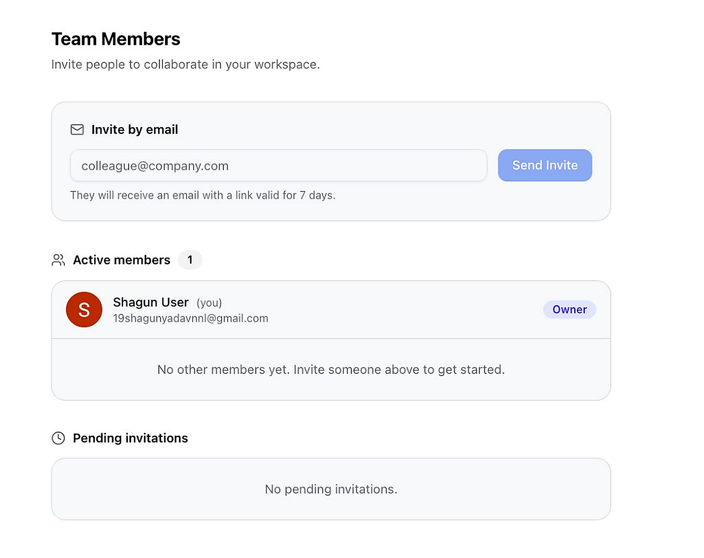
- Go to in the sidebar (Settings → Team)
- In the "Invite by email" section, type your colleague's email (e.g. colleague@company.com)
- Click Send Invite — they'll receive an email with a link valid for 7 days
- View Active members in the list below with their roles (Owner, Member)
- Check Pending invitations to see invites that haven't been accepted yet
Profile & Billing
Manage your account information, security, and subscription.
Account Settings
Update your profile, company details, and password.
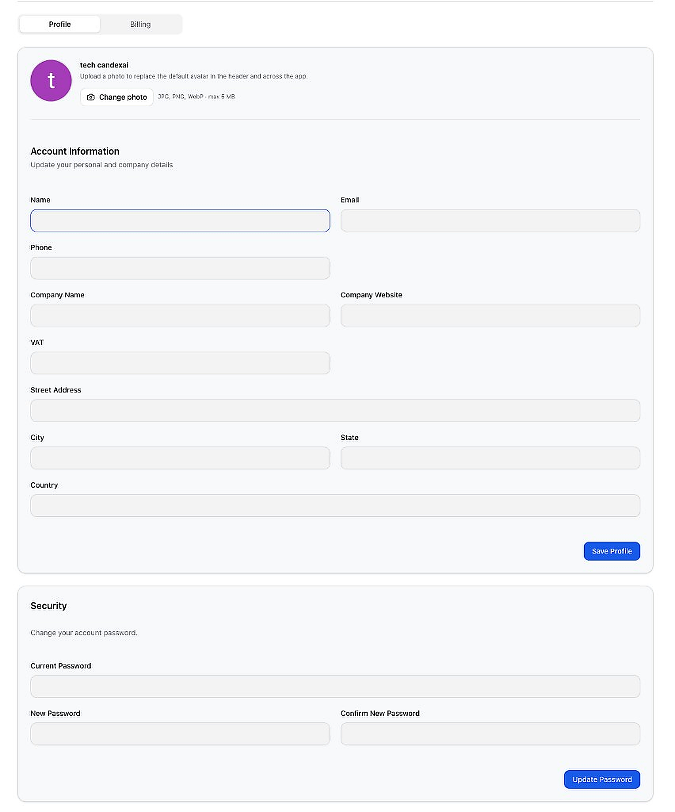
- Go to in the sidebar (or click your avatar → Settings)
- Switch between Profile and Billing tabs at the top
- Avatar: Click Change photo to upload a profile picture (JPG, PNG, WebP · max 5 MB)
- Account Information: Fill in Name, Email, Phone, Company Name, Website, VAT, and Address fields
- Click Save Profile to save your details
- Security: Enter Current Password, New Password, and Confirm New Password
- Click Update Password to change your password
🚀 You're Ready to Go!
Follow the 5-step quick start at the top of this guide, and you'll have your AI platform running in minutes.